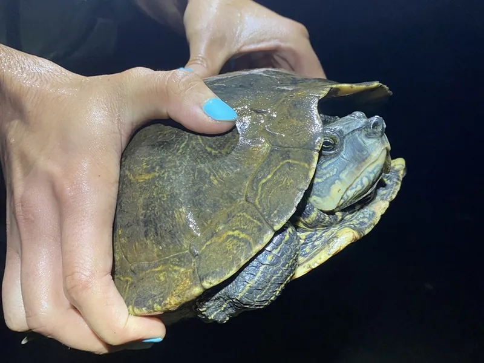

アラバマ州・ジョージア州の河川に固有分布する中型チズガメ。メスは25cmに達し、強力な顎で大型貝を砕く食性を持つ。流水環境と本格的な水質管理が必要な中上級種。

1年後の甲長は8〜12cm程度（オス）。甲羅の地図模様と脊稜が際立ち始め、個体の個性が出てくる。アラバマ州の清澄な河川を好む固有種で、水流のある環境と広めの遊泳スペースで活発に泳ぐ姿が観察できる。メスは顎が発達しており、成長とともに貝を砕く採食行動が見られる。
10年後、オスは甲長12〜15cm程度のまま。メスは20〜26cmに成長し、60〜90cm水槽が必要になる。性別による必要スペースの差が大きい種で、幼体購入時から成体サイズを見込んだ計画が重要。15〜25年の寿命があり、水質維持が飼育の要になりやすい。
アラバマチズガメは幼体時に性別判定が難しく、成長して初めてメスと分かるケースが多い傾向がある。メスは20〜26cmに達する場合があり、小さめの水槽しか用意していないと成体時に手狭になりやすい。購入前から「メスの可能性もある」として大きめの水槽を見込んでおくことが安定飼育につながりやすい。
アラバマ州モービル湾水系・ジョージア州チャタフーチー川の流れのある清澄な河川に固有分布。メスの顎はタニシ等の大型巻貝を砕くのに特化している。
流水好みのため適度な水流が必要。メス成体の25cmに備え、60〜90cmへの水槽アップグレードを計画してください。
← 横にスクロールできます
| 種名 | 甲長 | 難易度 | 必要環境 | 特徴 |
|---|---|---|---|---|
| アラバマチズガメ このページ | オス10/メス25cm | 中〜上級 | 60〜90cm | 本種・アラバマ固有 |
| クロコブチズガメ | オス10/メス18cm | 中〜上級 | 45〜90cm | 同州固有・小型メス |
| キタチズガメ | オス10/メス28cm | 中級 | 90cm〜 | 最大チズガメ |
| オウアチタチズガメ | オス10/メス22cm | 中級 | 60〜90cm | 定番チズガメ |